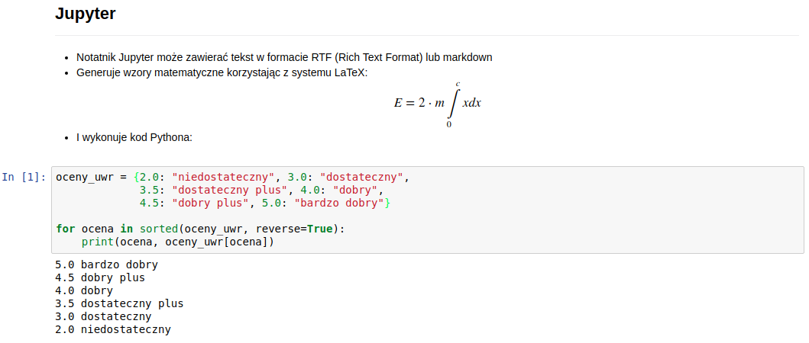
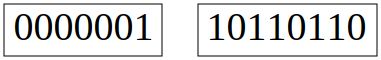

Sterowanie: spacja + shift-spacja || page down + page up || strzałki || esc
Python is powerful… and fast;
plays well with others;
runs everywhere;
is friendly & easy to learn;
is Open.
C++
#include <iostream>
int main() {
std::cout << "Hello World!";
}Java
public class Hello {
public static void main(String []args) {
System.out.println("Hello World!");
}
}Python
print("Hello World!")Short version: Python 2.x is legacy, Python 3.x is the present and future of the language
Niektóre zmiany są kosmetyczne
# Python 2
print "Hello World!"
# Python 3
print("Hello World!")Niektóre niebezpieczne
# Python 2
3 / 2.0 = 1.5
3 / 2 = 1
# Python 3
3 / 2.0 = 1.5
3 / 2 = 1.5
3 // 2 = 1Python 2.7.12 (default, Jul 1 2016, 15:12:24)
[GCC 5.4.0 20160609] on linux2
Type "help", "copyright", "credits" or "license" for more information.
>>> 3 / 2
1
>>> from __future__ import division
>>> 3 / 2
1.5
>>> Na wykładzie omawiany będzie Python 3
python (lub python3) uruchamia tryb interaktywny Pythona$ python
Python 3.6.1 |Anaconda custom (64-bit)| (default, May 11 2017, 13:09:58)
[GCC 4.4.7 20120313 (Red Hat 4.4.7-1)] on linux
Type "help", "copyright", "credits" or "license" for more information.
>>> python nazwa_skryptu.py wykonuje skrypt$ python
Python 3.5.2 |Anaconda custom (64-bit)| (default, Jul 2 2016, 17:53:06)
[GCC 4.4.7 20120313 (Red Hat 4.4.7-1)] on linux
Type "help", "copyright", "credits" or "license" for more information.
>>> oceny_uwr = {2.0: "niedostateczny", 3.0: "dostateczny",
... 3.5: "dostateczny plus", 4.0: "dobry",
... 4.5: "dobry plus", 5.0: "bardzo dobry"}
>>> for ocena in sorted(oceny_uwr, reverse=True):
... print(ocena, oceny_uwr[ocena])
...
5.0 bardzo dobry
4.5 dobry plus
4.0 dobry
3.5 dostateczny plus
3.0 dostateczny
2.0 niedostateczny
>>> $ cat skala_ocen.py # drukuje zawartość pliku skala_ocen.py
oceny_uwr = {2.0: "niedostateczny", 3.0: "dostateczny",
3.5: "dostateczny plus", 4.0: "dobry",
4.5: "dobry plus", 5.0: "bardzo dobry"}
for ocena in sorted(oceny_uwr, reverse=True):
print(ocena, oceny_uwr[ocena])$ python skala_ocen.py # uruchamia skala_ocen.py
5.0 bardzo dobry
4.5 dobry plus
4.0 dobry
3.5 dostateczny plus
3.0 dostateczny
2.0 niedostatecznyW systemach uniksopodobnych można zadać intepreter, który ma być użyty do wykonania skryptu korzystając z #! (shebang lub hashbang)
Podając pełną ścieżkę do intepretera, np. #!/usr/bin/python
lub korzystając z definicji zmiennej środowiskowej PATH, np. #!/usr/bin/env python
$ cat skala_ocen.py # drukuje zawartość pliku skala_ocen.py
#!/usr/bin/env python
oceny_uwr = {2.0: "niedostateczny", 3.0: "dostateczny",
3.5: "dostateczny plus", 4.0: "dobry",
4.5: "dobry plus", 5.0: "bardzo dobry"}
for ocena in sorted(oceny_uwr, reverse=True):
print(ocena, oceny_uwr[ocena])$ ./skala_ocen.py # uruchamia skala_ocen.py
5.0 bardzo dobry
4.5 dobry plus
4.0 dobry
3.5 dostateczny plus
3.0 dostateczny
2.0 niedostateczny
import random
# skala ocen obowiązująca na Uniwersytecie Wrocławskim
oceny_uwr = {2.0: "niedostateczny", 3.0: "dostateczny",
3.5: "dostateczny plus", 4.0: "dobry",
4.5: "dobry plus", 5.0: "bardzo dobry"}
# lista studentów uczęszczających na zajęcia z Pythona
lista_studentow = ["Kasia", "Basia", "Józek", "Marek"]
# przez lenistwo prowadzącego oceny wystawiane losowo
for student in lista_studentow:
# losowa ocena
ocena = random.choice(list(oceny_uwr))
# przypisanie oceny
print(student, " -> ", oceny_uwr[ocena])Wynik działania poniższego kodu będzie identyczny
Ale czy jest on równie czytelny?
import random
o = {2.0: "niedostateczny", 3.0: "dostateczny", 3.5: "dostateczny plus", 4.0: "dobry", 4.5: "dobry plus", 5.0: "bardzo dobry"}
s = ["Kasia", \
"Basia", "Józek",
"Marek"]
for i in range(len(s)): x = random.randint(2, len(o) - 1); print(s[i], " -> ", o[x])int)float)complex)str)# [zmienna] [operator przypisania] [wartość]
x = 1
y = 1.0
z = 1j
# drukuj typy zmiennych x, y i z (oddzielone przecinkiem)
print(type(x), type(y), type(z), sep=", ")<class 'int'>, <class 'float'>, <class 'complex'>x = y # przypisz zmiennej x wartość zmiennej y
type(x)<class 'float'>\[a_n...a_2a_1a_0 = \sum\limits_{i = 0}^{n} a_i \cdot 10^{i}\]
gdzie \(a_i \in \{0,...,9\}\), np.
\[438 = 4 \cdot 10^2 + 3 \cdot 10^1 + 8 \cdot 10^0\]
\[a_n...a_2a_1a_0 = \sum\limits_{i = 0}^n a_i \cdot 2^i\]
gdzie \(a_i \in \{0,1\}\), np.
\[110110110_2 = 1 \cdot 2^8 + 1 \cdot 2^7 + \cdots 0 \cdot 2^0 = 438\]

438 = 00000000 00000000 00000001 10110110Manually changing the date to May 1970 or earlier can prevent your iOS device from turning on after a restart.
Architektura 32-bitowa dysponuje \(2^{32}\) adresami
B = 1 # bajt
KB = 1024 * B # kilobajt
MB = 1024 * KB # megabajt
2**32 / MB # = 4096.0Wszystkie podstawowe operacje na liczbach są zdefiniowane dla każdego wbudowanego typu liczbowego
2 + 2 # wynik = 4 (liczba całkowita)
2 + 2.0 # wynik = 4.0 (liczba zmiennoprzecinkowa)Istnieją również funkcje wbudowane, np.
abs(-10) # wynik = 10 (moduł)
pow(2, 3) # wynik = 8 (potęga)
...Python posiada bogatą bibliotekę standardową
Moduły można dołączyć za pośrednictwem słowa kluczowego import
import [nazwa modułu] # importuje cały moduł
from [nazwa modułu] import [nazwa funkcji] # importuje pojedynczą funkcję
from [nazwa modułu] import * # importuje (prawie) wszystoWięcej o modułach na kolejnych wykładach
mathimport math
dir(math) # lista dostępnych funkcji['__doc__',
'__file__',
'__loader__',
'__name__',
'__package__',
'__spec__',
'acos',
'acosh',
'asin',
'asinh',
'atan',
'atan2',
'atanh',
'ceil',
'copysign',
'cos',
'cosh',
'degrees',
'e',
'erf',
'erfc',
'exp',
'expm1',
'fabs',
'factorial',
'floor',
'fmod',
'frexp',
'fsum',
'gamma',
'gcd',
'hypot',
'inf',
'isclose',
'isfinite',
'isinf',
'isnan',
'ldexp',
'lgamma',
'log',
'log10',
'log1p',
'log2',
'modf',
'nan',
'pi',
'pow',
'radians',
'sin',
'sinh',
'sqrt',
'tan',
'tanh',
'trunc']# zwróć uwagę na [moduł].[funkcja]
help(math.floor) # dokumentacja funkcji floor z mathHelp on built-in function floor in module math:
floor(...)
floor(x)
Return the floor of x as an Integral.
This is the largest integer <= x.cmathModuł cmath - podobny zestaw funkcji, ale dla liczb zespolonych
import cmath
dir(cmath) # porównaj z dir(math)['__doc__',
'__file__',
'__loader__',
'__name__',
'__package__',
'__spec__',
'acos',
'acosh',
'asin',
'asinh',
'atan',
'atanh',
'cos',
'cosh',
'e',
'exp',
'isclose',
'isfinite',
'isinf',
'isnan',
'log',
'log10',
'phase',
'pi',
'polar',
'rect',
'sin',
'sinh',
'sqrt',
'tan',
'tanh']import math
import cmath
math.acos(...) # wywoła funkcję acos z math
cmath.acos(...) # wywoła funkcję acos z cmathW niektórych sytuacjach wygodnie jest zaimportować tylko wybrane funkcje z danego modułu
from math import acos, cos
acos(...)
cos(...)W takiej sytuacji wywołujemy je bezpośrednio
(bez [moduł].[funkcja])
Jednak trzeba to robić ostrożnie, żeby nie nadpisać zdefiniowanej lub zaimportowanej wcześniej funkcji o tej samej nazwie
from math import acos, cos
from cmath import acos
cos(...) # wywoła cos z math
acos(...) # wywoła acos z cmath!>>> import this
The Zen of Python, by Tim Peters
Beautiful is better than ugly.
Explicit is better than implicit.
Simple is better than complex.
Complex is better than complicated.
Flat is better than nested.
Sparse is better than dense.
Readability counts.
Special cases aren't special enough to break the rules.
Although practicality beats purity.
Errors should never pass silently.
Unless explicitly silenced.
In the face of ambiguity, refuse the temptation to guess.
There should be one-- and preferably only one --obvious way to do it.
Although that way may not be obvious at first unless you're Dutch.
Now is better than never.
Although never is often better than *right* now.
If the implementation is hard to explain, it's a bad idea.
If the implementation is easy to explain, it may be a good idea.
Namespaces are one honking great idea -- let's do more of those!